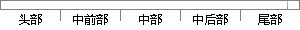

uart_print(" release one memory\n");
片段位置图

相似结果
相似片段：2009年10月23 - * on memory allocations, interrupts etc.. */...uart_add_one_portecho hello > /dev/console的... * release_console_sem() will print out the ...
| 标题 | 《今天看了看console_init()-mclovein-ChinaUnix博客》 |
| 对比库 | PaperRater云论文库 |
| 网址 | http://blog.chinaunix.net/uid-20902140-id-1831994.html |
| 相似率 | 61.54% （轻度抄袭） |